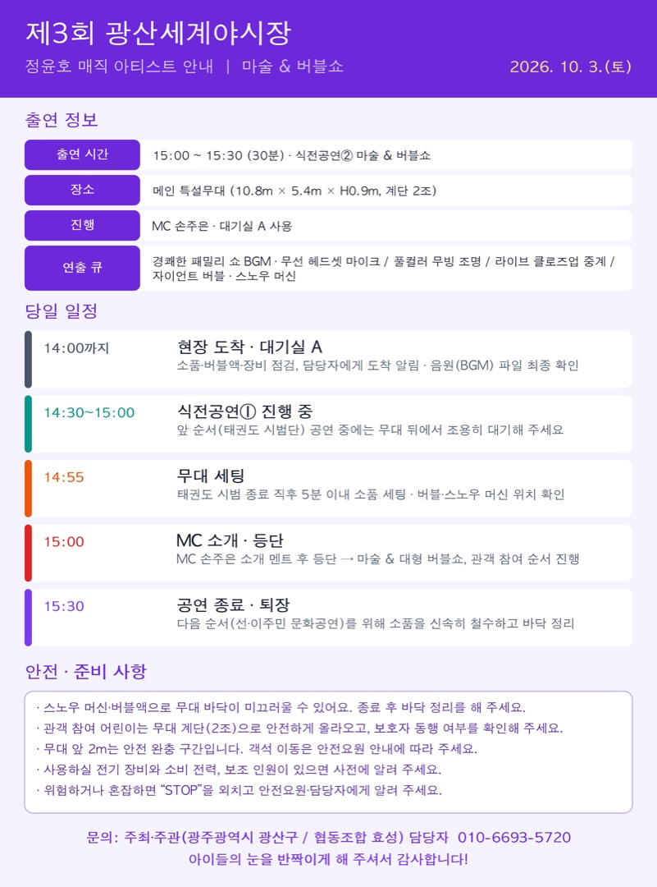

출연팀
정윤호 마술 & 버블쇼
15:00 식전공연②

이미지를 누르면 크게 볼 수 있고, 길게 눌러 저장할 수 있습니다.
정윤호 님의 마술 & 버블쇼는 올해 축제의 식전공연②로 진행됩니다.
10월 3일(토) 일정과 준비 사항을 안내드립니다. (첨부 이미지 참고)
출연 정보
- 일시: 2026. 10. 3.(토) 15:00 ~ 15:30 (30분) · 식전공연② 마술 & 버블쇼
- 장소: 광산구 월곡동 목련로 메인 특설무대 (10.8m × 5.4m × H0.9m, 계단 2조)
- 진행: MC 손주은 / 대기실 A 사용
- 연출 큐: 경쾌한 패밀리 쇼 BGM, 무선 헤드셋 마이크 / 풀컬러 무빙 조명 / 라이브 클로즈업 중계 / 자이언트 버블 · 스노우 머신
당일 일정
- 14:00까지 현장 도착 → 대기실 A에서 소품·버블액·장비 점검, 담당자에게 도착 알림, 음원(BGM) 파일 최종 확인
- 14:30~15:00 앞 순서(식전공연① 태권도 시범단) 공연 중에는 무대 뒤에서 조용히 대기
- 14:55 태권도 시범 종료 직후 5분 이내 소품 세팅, 버블·스노우 머신 위치 확인
- 15:00 MC 손주은 소개 멘트 후 등단 → 마술 & 대형 버블쇼, 관객 참여 순서 진행
- 15:30 공연 종료·퇴장 (다음 순서 선·이주민 문화공연을 위해 소품을 신속히 철수하고 바닥 정리)
안전·준비 사항
- 스노우 머신·버블액으로 무대 바닥이 미끄러울 수 있으니 종료 후 바닥 정리를 해 주세요.
- 관객 참여 어린이는 무대 계단(2조)으로 안전하게 올라오도록 하고, 보호자 동행 여부를 확인해 주세요.
- 무대 앞 2m는 안전 완충 구간입니다. 객석 이동은 안전요원 안내에 따라 주세요.
- 사용하실 전기 장비와 소비 전력, 보조 인원이 있으면 사전에 알려 주세요.
- 위험하거나 혼잡하면 “STOP”을 외치고 안전요원·담당자에게 알려 주세요.
궁금하신 점은 담당자(010-6693-5720)로 문의해 주세요.
아이들의 눈을 반짝이게 해 주셔서 감사합니다.